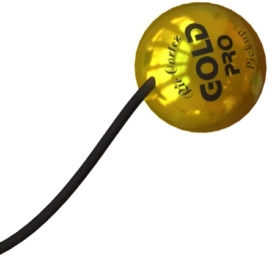

- Captadores
- Interfaces de áudio
- Microfones
- Kits Gold Pro
- Acessórios
Ofertas em destaque
Parcelamento sem juros é condição exclusiva da Black November, só até 30/11.
Encontre pelo tipo
Escolha o seu som
Grave que preenche o palco.
Captação de contato com sensores de diâmetros diferentes para os lados grave e agudo do tampo. Disponível em versão individual ou dupla.
- Funciona sem bateria 9V
- Pode ser ligado a um preamp
- Timbre potente e natural, com graves encorpados
Feito para quem toca
Sem bateria
Os captadores de contato e rastilho funcionam sem bateria 9V. Ligue direto no pedal, na mesa ou no preamp.
100% blindado
Captação piezo e de contato com blindagem contra ruído, para gravar e tocar ao vivo com o sinal limpo.
Corda, percussão e sopro
Violão, cavaquinho, viola, cajon e mais. Cada página de produto indica para qual instrumento ele foi feito.
5% off no Pix ou 12x no cartão
Pague com Pix e ganhe 5% de desconto, ou parcele no cartão de crédito em até 12 vezes.
Quem usa, recomenda
Perguntas e respostas
Não achou o que procurava? Fale com a equipe pelo atendimento no rodapé.
Falar com a equipeNão. Os captadores de contato e os rastilhos, como o Gold Extreme Bass e o RT7, funcionam sem bateria 9V e podem ser ligados direto ao amplificador, pedal, pedaleira ou a um preamp ativo. A página de cada produto traz os detalhes.
A linha Gold Pro atende instrumentos de corda, percussão e sopro. Os rastilhos RT6 e RT7 são feitos para violão de 6 e 7 cordas, com cordas de nylon ou aço. Cada produto indica o instrumento ideal na própria página.
Os captadores externos são fixados por fora, sem furar o instrumento, com massinha adesiva reutilizável. Assim você pode testar posições até achar o melhor timbre.
Jackcap são captadores de alta impedância para uso externo, nos modelos 1 UP, 2 UP e 3 UP. A diferença está nos controles: o 2 UP tem botão de volume e o 3 UP tem botões de volume e tone. Gold Pro é a linha de captação de contato para corda, percussão e sopro, que inclui os rastilhos RT6 e RT7. Gold Extreme Bass é a captação de contato com graves encorpados, com sensores diferentes para grave e agudo, em versão individual ou dupla.
Enviamos para todo o Brasil, com frete grátis de até R$ 35,00 em compras acima de R$ 135,00 (se o frete custar mais, você paga só a diferença). Despacho em até 2 dias úteis, ou em até 4 dias úteis nos itens feitos sob demanda; o prazo de entrega depende da região. O código de rastreio é enviado por e-mail.
Todos os produtos têm a garantia legal de 90 dias contra defeitos, contada a partir do recebimento. Os captadores Jackcap 1, 2 e 3, com suas variantes, e o Gold Extreme Bass Individual e Duplo têm 1 ano de garantia, indicado por um selo na página do produto. Em compras pela internet você pode desistir em até 7 dias após o recebimento, conforme o Código de Defesa do Consumidor.
Encontre o captador certo para o seu instrumento.
Compare modelos, veja fotos e escolha entre captadores de contato, rastilhos, interfaces e kits.
